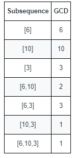

| Category | Difficulty | Likes | Dislikes |
|---|---|---|---|
| Algorithms | Hard | 433 | 48 |
array | math | counting | number-theory
akuna-capital
You are given an array nums that consists of positive integers.
The GCD of a sequence of numbers is defined as the greatest integer that divides all the numbers in the sequence evenly.
[4,6,16] is 2.A subsequence of an array is a sequence that can be formed by removing some elements (possibly none) of the array.
[2,5,10] is a subsequence of [1,2,1,2,4,1,5,10].Return the number of different GCDs among all non-empty subsequences of nums.
Example 1:

Input: nums = [6,10,3]
Output: 5
Explanation: The figure shows all the non-empty subsequences and their GCDs.
The different GCDs are 6, 10, 3, 2, and 1.Example 2:
Input: nums = [5,15,40,5,6]
Output: 7
Constraints:
1 <= nums.length <= 1051 <= nums[i] <= 2 * 105